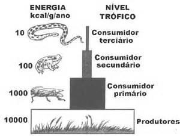

Níveis Tróficos
Entenda como os níveis tróficos funcionam na cadeia alimentar.

O que são Níveis Tróficos?
Os níveis tróficos representam as diferentes posições dos organismos dentro da cadeia alimentar.
Principais Níveis Tróficos:
- Produtores – Plantas e algas que fazem fotossíntese.
- Consumidores Primários – Herbívoros que se alimentam de plantas.
- Consumidores Secundários – Carnívoros que comem herbívoros.
- Decompositores – Fungos e bactérias que reciclam nutrientes.